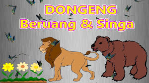

3. Menceritakan Kembali Isi Fabel

Judul fabel : Singa dan Beruang
Pada suatu hari, seekor singa mengajak beruang berburu bersama. Beruang pun setuju sebab dia juga sangat lapar. Mereka pun segera menuju ke tengah hutan di padang rumput yang luas karena di sana terdapat banyak sekali mangsa.
Setibanya di padang rumput, beruang dan singa bersembunyi di balik semak-semak. Dan mereka pun mengincar mangsa yang hendak mereka kejar.
Ketika mereka mengamati mangsa masing masing, singa dan beruang pun keluar dari persembunyiannya secara bersamaan. Keduanya mengejar mangsa masing masing. Tidak disadarinya, ternyata keduanya mengejar mangsa yakni rusa yang ternyata incaran keduanya adalah rusa yang sama.
Sehingga dengan mudah sekali rusa tersebut ditangkap. Akhirnya singa dan beruang pun bertengkar untuk memperebutkan rusa incaran mereka.
“Ini Mangsaku. Aku yang menangkapnya pakai gigitanku yang sangat kuat,” kata seekor singa.
Beruang pun tak mau kalah, “Bukan, ini rusaku. Aku pun menangkapnya.”
Keduanya terus memperebutkan rusa yang sama. Ketika hari sudah mulai sore, beruang dan singa akhirnya berhenti memperebutkan binatang buruan mereka. Keduanya capek dan Cuma bisa duduk tanpa bisa menggerakan tubuh mereka.
Ternyata dari tadi seekor serigala mengamati pertengkaran kedua binatang buas itu. Mengetahui saat ini beruang dan singa telah lelah.
“Ah, inilah kesempatanku untuk merebut buruan tersebut,” pikir serigala itu.
Serigala pun langsung berlari serta merebut rusa itu. “Terima kasih ya “ kata srigala. Kalian baik sekali telah memberiku rusa yang nikmat ini,” ucap serigala sambil tertawa.
Menggunakan sisa tenaga mereka, beruang dan singa pun berusaha merebut lagi mangsa mereka. Tapi, mereka sudah sangat lelah, hingga rusa itu dibawa serigala kabur.
“Semuanya salah kita. Jika saja kita tadi mau berbagi, tentu kita sama-sama kenyang saat ini,” ucap mereka dengan wajah menyesal.
Urutkanlah peristiwa fabel di atas ke dalam tabel struktur berikut ini
| Bagian fabel | Bukti dalam teks |
| 1. Orientasi | |
| 2. Komplikasi | |
| 3. Resolusi | |
| 4. Koda | |